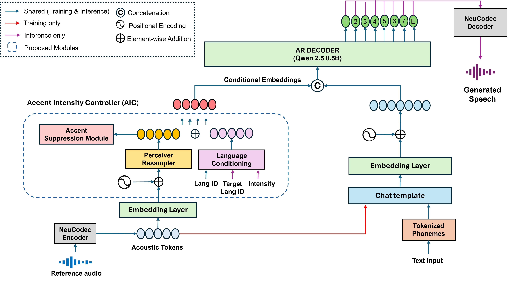

CrossAccent-TTS: Cross-Lingual Accent-Intensity Controllable Text-to-Speech via Disentangled Speaker and Accent Representations
Model Architecture

Figure 1. Block diagram of the proposed CrossAccent-TTS.